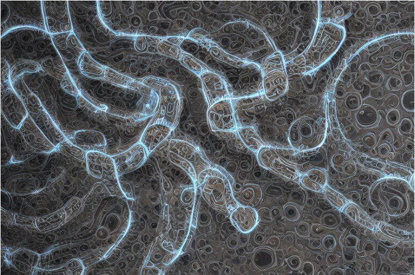

Caution with Multiprocessing and ffspec Filesystems in Python¶
Multiprocessing can be a great way of scaling Python applications beyond one CPU core, especially due slow speed compared to other lower-level languages like C or Java. However, one has to be very careful when passing Python class instance, especially if your are using a fsspec filesystem implementation.
Note: At time of writing of this article the newest fsspec release was 2023.3.0.
The Problem¶
Filesystem Spec (fsspec) is a Python package that provides a unified interface for filesystems. However, one has to be very carefull, when running tasks on an fsspec Filesystem in parallel. Let us consider the following code:
import multiprocessing
from fsspec import AbstractFileSystem
multiprocessing.set_start_method("fork")
class MyClass:
def __init__(self):
self.store: dict[str, str] = {}
class MyFS(AbstractFileSystem):
def __init__(self):
self.store: dict[str, str] = {}
def return_store(my_class: MyClass) -> str:
return f"Class Name: {my_class.__class__.__name__: <10} Store: {my_class.store}"
# Create class instance in parent process and add stuff to the internal store:
my_class = MyClass()
my_class.store["added"] = "content"
my_fs = MyFS()
my_fs.store["added"] = "content"
# Run the function in a child process:
with multiprocessing.Pool(processes=2) as pool:
messages = pool.map(
return_store,
[my_class, my_fs],
)
# Print out store content from child processes:
for message in messages:
print(message)
What we have here are two very simple classes MyClass and MyFS that just create an empty dictionary store attribute when instantiated. The key difference between these two classes is that MyFS is inherited from fsspec.AbstractFileSystem. We then create an instance of each of the two classes and add an entry to the store dictionary. Finally, we run a simple function in 2 child processes that just prints out the content of the store attribute. The resulting output of this script will be:
Class Name: MyClass Store: {'added': 'content'}
Class Name: MyFS Store: {}
As can be seen, the store attribute of the MyFS class does not contain the added entry, whereas the same class without inheritance from the AbstractFileSystem does contain the non-empty dictionary. The reason behind these two different behaviours lies in the caching implementation of fsspec. The inheritance diagram looks like:
---
title: Class Diagram MyFS
---
classDiagram
`fsspec.spec._Cached` <|-- `fsspec.AbstractFileSystem`
`fsspec.AbstractFileSystem` <|-- `MyFS`
class `fsspec.spec._Cached`{
__init__()
__call__()
}
class `fsspec.AbstractFileSystem`{
+ ...
}This line in the _Cached base is responsible for removing all existing attributes on the class instance when it will be forked for the child process:
class _Cached(type):
...
def __call__(cls, *args, **kwargs):
...
if os.getpid() != cls._pid:
# In a child process, this line is called and will clear all existing attributes:
cls._cache.clear()
...
Possible solutions¶
If you really want to parallelize applications with an fsspec Filesystem, there are at least 2 solutions.
Use threading¶
If you run the code above with a multiprocessing.pool.ThreadPool instead of a multiprocessing.Pool, it just runs fine and does not show the observed caching behaviour.
Instantiate the filesystem inside the processes itself¶
Instead of passing the instatiated filesystem directly into the subprocess, it is better to use an Adapter that stores the information about the filesystem and can create an instance of it. Let us consider the following example:
import multiprocessing
from fsspec.implementations.github import GithubFileSystem
multiprocessing.set_start_method("fork")
class GithubFileSystemAdapter:
def __init__(self, org: str, repo: str):
self.org = org
self.repo = repo
def get_github_fs(self) -> GithubFileSystem:
return GithubFileSystem(org=self.org, repo=self.repo)
def list_root_directory_of_repository(
github_fs_adapter: GithubFileSystemAdapter,
) -> list[str]:
# Create fsspec filesystem inside child process:
github_fs = github_fs_adapter.get_github_fs()
return github_fs.ls("/")
# Create GithubFileSystemAdapter for 'https://github.com/python/cpython':
github_fs_adapter = GithubFileSystemAdapter(org="python", repo="cpython")
# Run the function in a child process:
with multiprocessing.Pool(processes=1) as pool:
messages = pool.map(
list_root_directory_of_repository,
[github_fs_adapter],
)
# Print out store content from child process:
for message in messages:
print(message)
As can be seen, we define a container class GithubFileSystemAdapter that simply stores the data and implements a method for creating the filesystem. This container class is then passed to the child process, within which the fsspec filessystem object is created. It can then be safely used without the problems seen in the previous example.